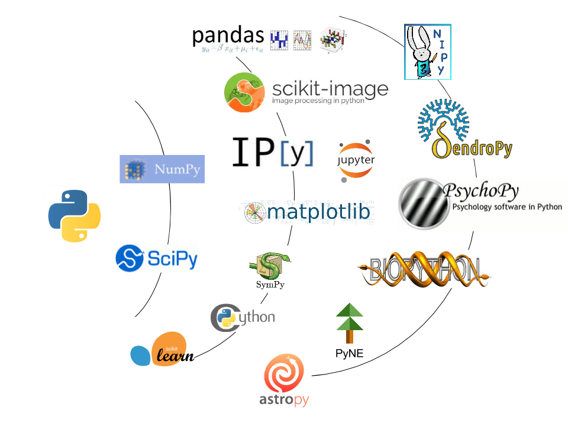

Open source tools for reproducible neuroscience research
Ariel Rokem, University of Washington eScience Institute
Follow along at
Python
The lingua franca of reproducible computational science
Open source
Easy to learn
Phenomenal ecosystem of open-source tools
The scipy & nipy ecosystem
The scipy & nipy ecosystem

The scipy & nipy ecosystem

The scipy & nipy ecosystem
http://arokem.org

arokem@gmail.com

@arokem

github.com/arokem